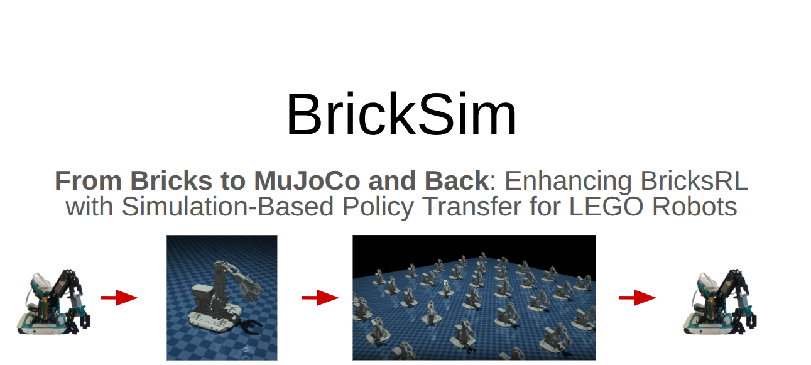
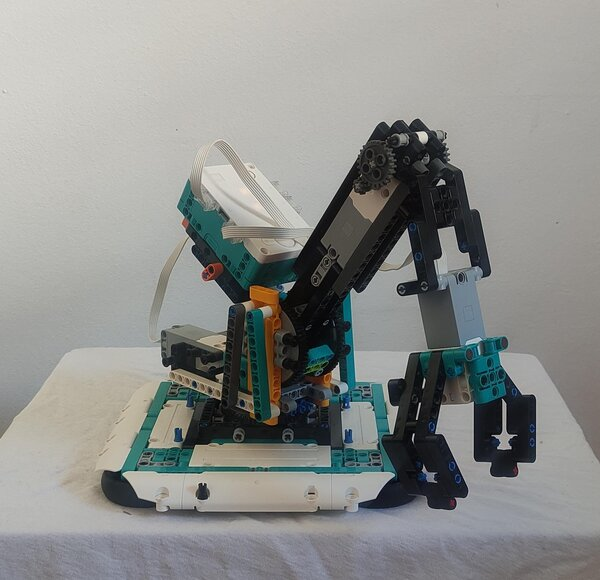
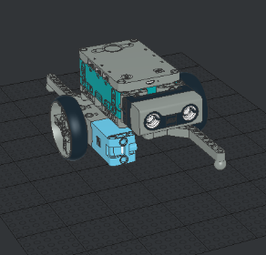
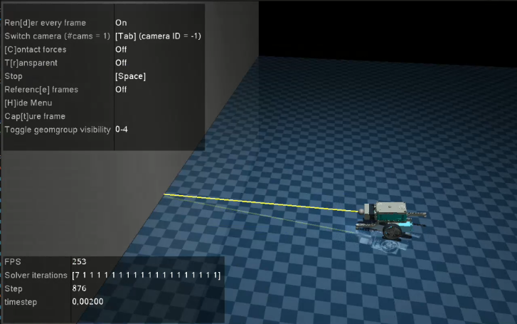
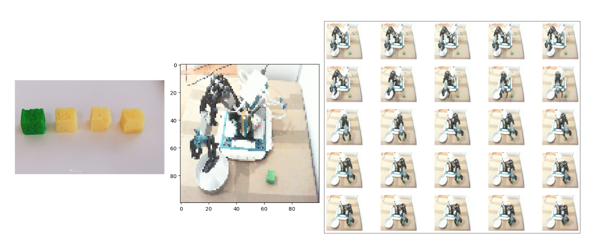
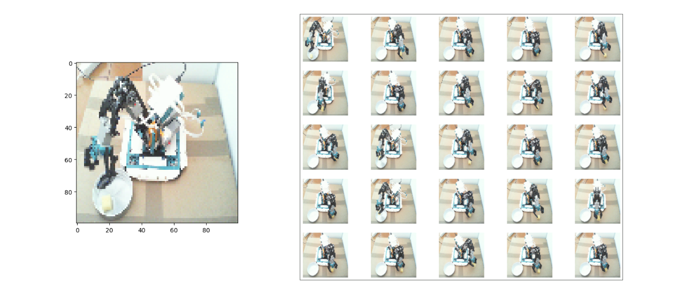

Projects & Highlights

BricksRL
A platform for democratizing robotics and reinforcement learning research and education with LEGO. Build real robotic systems with accessible hardware and train RL agents on physical robots.
Happy to discuss any of these — feel free to reach out.
Videos & Media
Demos, experiments, and robot builds
Gallery
Photos and additional media



